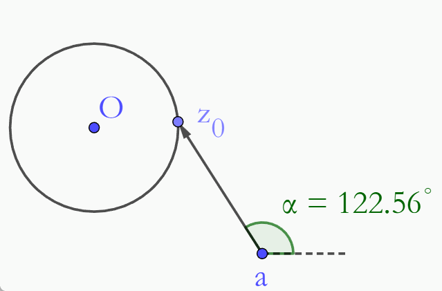
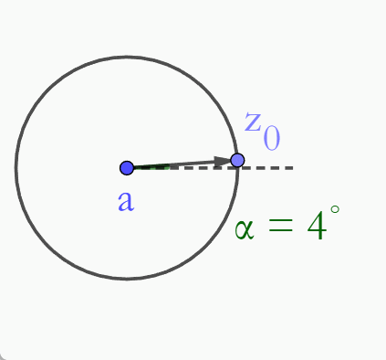

设有复数平面上的一个区域G，若给定G内的\(z\)值，有多个复数值\(w\)与之对应，则称\(w = f(z)\)为\(z\)的多值函数.
[注]根式函数、对数函数、反三角函数均为多值函数.
令
$$w = \rho e^{i\phi}$$ $$z - a = re^{i\theta}$$ $$\because w^2 = z - a$$ $$\therefore \rho^2e^{2i\phi} = re^{i\theta}$$ $$\therefore \begin{cases} \rho^2 = r\\ 2\phi = \theta + 2n\pi \end{cases}\Rightarrow \begin{cases}\rho = \sqrt{r}\\\phi = \frac{\theta}{2} + n\pi\end{cases},~n = 0,\pm1,\pm2,\cdots$$故对于一个给定的\(z\)值。有两个\(w\)值与之对应：
$$w_1(z) = \sqrt{r}e^{i\theta/2},~n = 0, \pm2, \cdots$$ $$w_2(z) = \sqrt{r}e^{i(\pi + \theta/2)} = -\sqrt{r}e^{i\theta/2},~n= \pm1,\pm3,\cdots$$可见：
\(w\)的多值性来源于\(z-a\)辐角的多值性.
引起多值性的\(z-a\).
\(w = \sqrt{z-a}\)可以表示为：
$$|w| = \sqrt{|z-a|}$$ $$\arg w = \frac{1}{2}\arg(z-a)$$在\(z\)复平面画一个不经过\(a\)点的简单闭合曲线，即自身不相交的闭合曲线.
研究自变量\(z\)从闭合曲线上某一点\(z_0\)出发，沿曲线逆时针连续运动一周回到\(z_0\)点时，\(w\)复平面内\(w\)值相应的连续变化情况.
Caes 1当\(a\)在闭合曲线之外时：
$$\arg'(z-a) = \arg(z-a)$$ $$\begin{align} \arg' w &= \frac{1}{2}\arg'(z-a)\\ &= \frac{1}{2}\arg(z-a)\\ &= \arg w \end{align}$$即\(w' = w\).

当\(a\)在闭合曲线之内时：
$$\arg'(z-a) = \arg(z-a) + 2\pi$$ $$\begin{align} \arg' w &= \frac{1}{2}\arg'(z-a)\\ &= \frac{1}{2}\arg(z-a) + \pi\\ &\neq \arg w \end{align}$$即\(w'\neq w\).

设\(w(z)\)在\(z_0\)点的空心邻域内每一点均有对应值，若对于\(\forall r\gt 0\)，当\(z\)绕圆周\(|z-z_0 = r|\)一圈回到原处时，\(w\)值不还原，则称\(z_0\)点为多值函数\(w(0)\)的分支点.
[注]一个多值函数通常有多个分支点.
对于\(w(z) = \sqrt{z-a}\)：
\(z = a\)（Case 2）与\(z = \infty\)为\(w(z) = \sqrt{z-a}\)的分支点.
\(z = b \neq a\)均不是\(w(z) = \sqrt{z-a}\)的分支点（Case 1中\(b = O\)的情形）.
单值化的目的：研究解析性、连续性等性质.
单值化的方法：将宗量\(z-a\)的辐角限制在某个\(2\pi\)周期内.
宗量辐角变化的各个周期，给出多值函数的各个单值分支，每个单值分支都是单值函数，整个多值函数就是它的各个单值分支的总和.
e.g.多值函数\(\sqrt{z-a}\)有两个单值分支，可以是：
单值分支Ⅰ：
$$0 \leq \arg(z-a) \lt 2\pi \Rightarrow 0\leq \arg w \lt \pi$$单值分支Ⅱ：
$$2\pi \leq \arg(z-a) \lt 4\pi \Rightarrow \pi\leq \arg w\lt 2\pi$$[注]宗量辐角变化范围的规定不是唯一的.